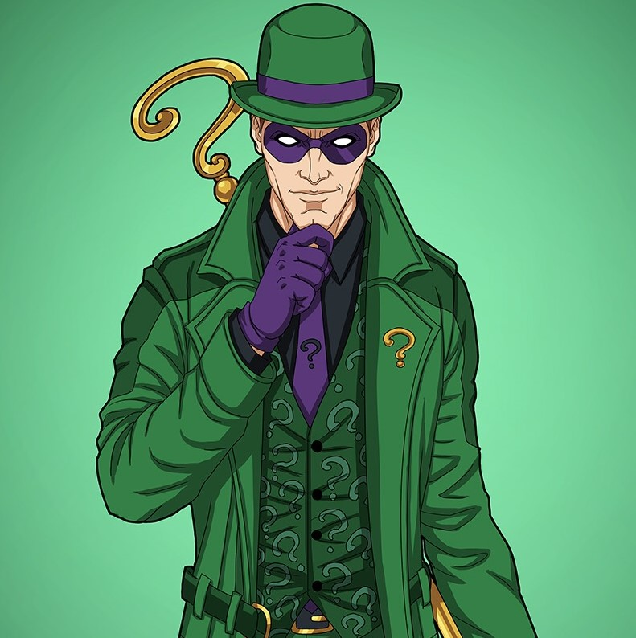
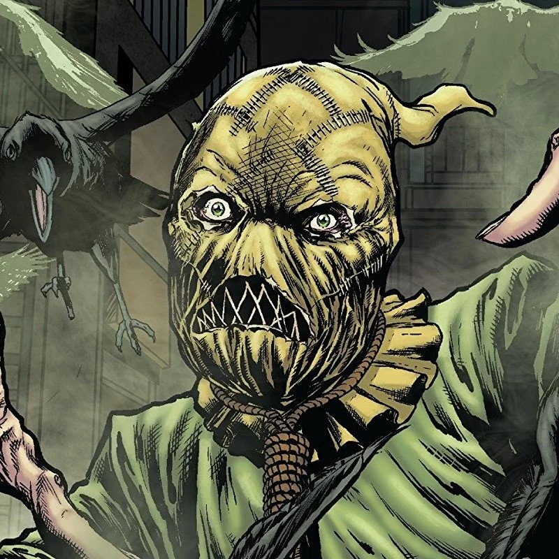
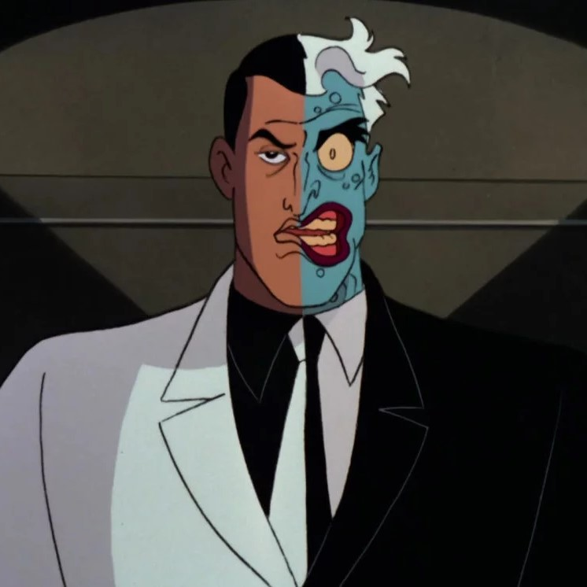
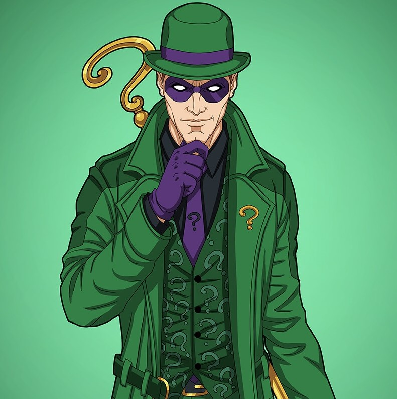
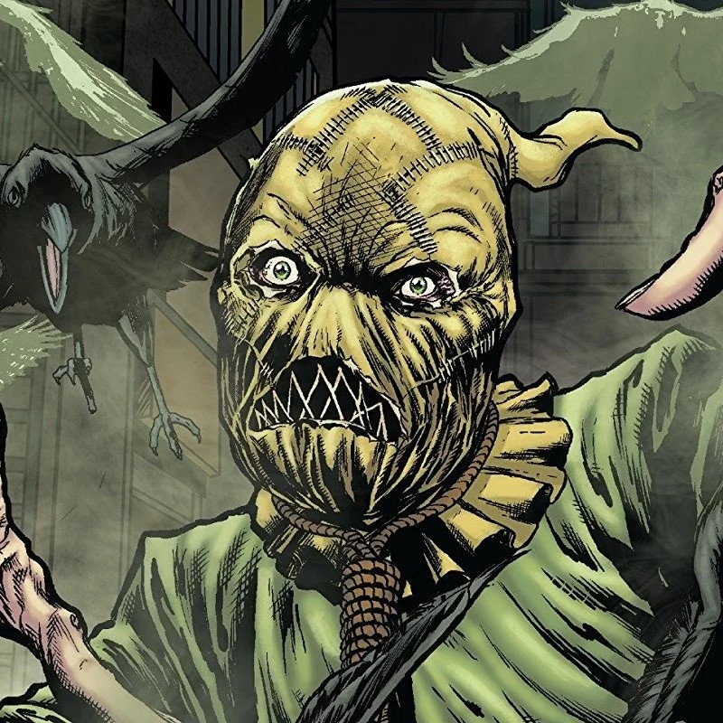
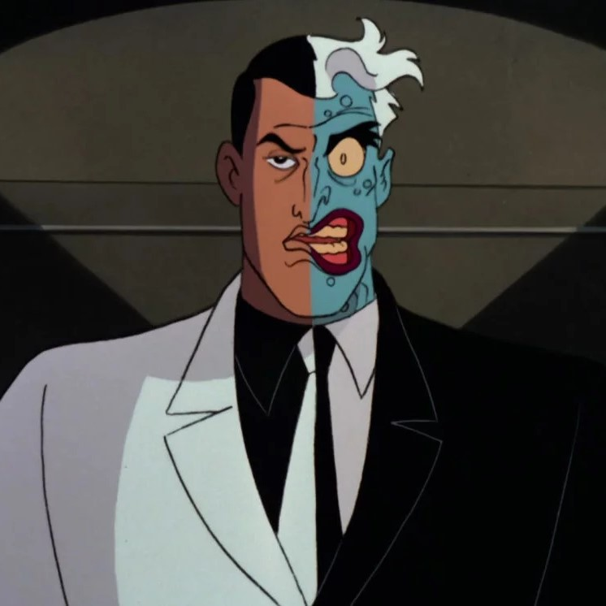

Batman's secret identity is Bruce Wayne, a wealthy American industrialist. As a child, Bruce witnessed the murder of his parents, Dr. Thomas Wayne and Martha Wayne, which ultimately led him to craft the Batman persona and seek justice against criminals. He resides on the outskirts of Gotham City in his personal residence, Wayne Manor. Wayne averts suspicion by acting the part of a superficial playboy idly living off his family's fortune and the profits of Wayne Enterprises, his inherited conglomerate. He supports philanthropic causes through his nonprofit Wayne Foundation, but is more widely known as a celebrity socialite. In public, he frequently appears in the company of high-status women, which encourages tabloid gossip. Although Bruce Wayne leads an active romantic life, his vigilante activities as Batman account for most of his time

Batman faces a variety of foes ranging from common criminals to outlandish supervillains. Many of them mirror aspects of the Batman's character and development, often having tragic origin stories that lead them to a life of crime. These foes are commonly referred to as Batman's rogues gallery. Batman's "most implacable foe" is the Joker, a homicidal maniac with a clown-like appearance. The Joker is considered by critics to be his perfect adversary, since he is the antithesis of Batman in personality and appearance; the Joker has a maniacal demeanor with a colorful appearance, while Batman has a serious and resolute demeanor with a dark appearance. As a "personification of the irrational", the Joker represents "everything Batman [opposes]". Other long time recurring foes that are part of Batman's rogues gallery include Catwoman (a cat burglar antiheroine who is an occasional ally and romantic interest), the Penguin, Ra's al Ghul, Two-Face, the Riddler, the Scarecrow, Mr. Freeze, Poison Ivy, Harley Quinn, Bane, Clayface, and Killer Croc among others. Many of Batman's adversaries are often psychiatric patients at Arkham Asylum.
 





Batman's butler, Alfred Pennyworth serves as Bruce Wayne's loyal father figure and is one of the few persons to know his secret identity. Alfred raised Bruce after his parents' death and knows him on a very personal level. He is sometimes portrayed as a sidekick to Batman and the only other resident of Wayne Manor aside from Bruce. The character lends a homely touch to Batman's environs and ever ready to provide a steadying and reassuring hand to the hero and his sidekick.
Batman is at times a member of superhero teams such as the Justice League of America and the Outsiders. Batman has often been paired in adventures with his Justice League teammate Superman, notably as the co-stars of World's Finest and Superman/Batman series. In pre-Crisis continuity, the two are depicted as close friends; however, in current continuity, they are still close friends but an uneasy relationship, with an emphasis on their differing views on crime-fighting and justice. Superman observes, "Sometimes, I admit, I think of Bruce as a man in a costume. Then, with some gadget from his utility belt, he reminds me that he has an extraordinarily inventive mind. And how lucky I am to be able to call on him."
Batman and Robin. Art by Jack Burnley. Robin, Batman's vigilante partner, has been a widely recognized supporting character for many years. Bill Finger stated that he wanted to include Robin because "Batman didn't have anyone to talk to, and it got a little tiresome always having him thinking." The first Robin, Dick Grayson, was introduced in 1940. In the 1970s he finally grew up, went off to college and became the hero Nightwing. A second Robin, Jason Todd, appeared in the 1980s. In the stories he was eventually badly beaten and then killed in an explosion set by the Joker, but was later revived. He used the Joker's old persona, the Red Hood, and became an antihero vigilante with no qualms about using firearms or deadly force. Carrie Kelley, the first female Robin to appear in Batman stories, was the final Robin in the continuity of Frank Miller's graphic novels The Dark Knight Returns and The Dark Knight Strikes Again, fighting alongside an aging Batman in stories set out of the mainstream continuity.
The third Robin in mainstream comics is Tim Drake, who first appeared in 1989. He went on to star in his own comic series, and currently goes by Red Robin, a variation on the traditional Robin persona. In the first decade of the new millennium, Stephanie Brown served as the fourth in-universe Robin between stints as her self-made vigilante identity The Spoiler, and later as Batgirl. After Stephanie Brown's apparent death, Drake resumed the role of Robin for a time. The role eventually passed to Damian Wayne, the ten-year-old son of Bruce Wayne and Talia al Ghul, in the late 2000s. Damian's tenure as du jour Robin ended when the character was killed off in the pages of Batman Incorporated in 2013. Batman's next young sidekick is Harper Row, a streetwise young woman who avoids the name Robin but followed the ornithological theme nonetheless; she debuted the codename and identity of Bluebird in 2014. Unlike the Robins, Bluebird is willing and permitted to use a gun, albeit non-lethal; her weapon of choice is a modified rifle that fires taser rounds. In 2015, a new series began titled We Are Robin, focused on a group of teenagers using the Robin persona to fight crime in Gotham City.